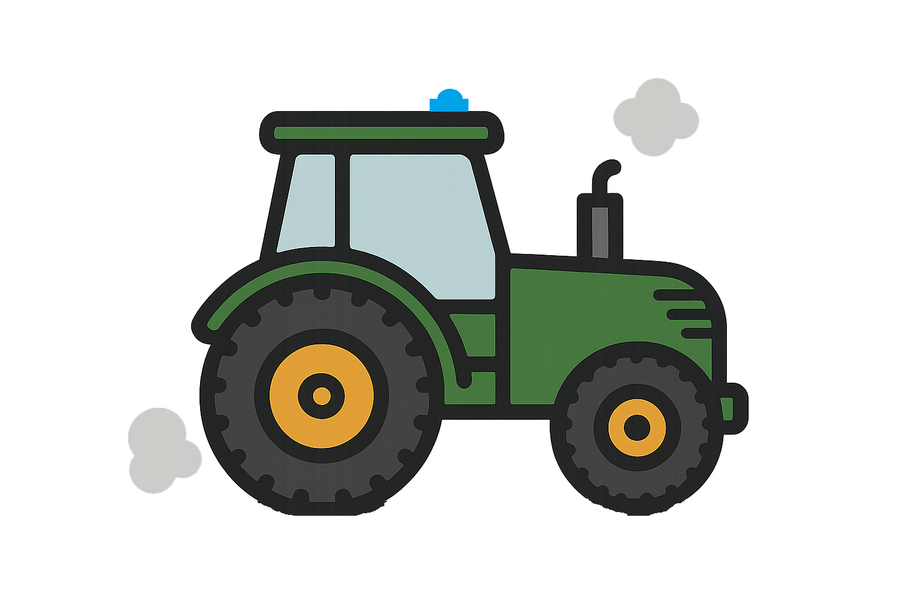

Sveaverken
Strona główna
Pierwsze kroki
Funkcje F100
Instrukcje
Problemy
Stacje bazowe
Filmy YouTube
Ładowanie danych geomagnetycznych...
üì∞ Sprawdź najnowsze informacje
×
Aktualności
Status aktywności słonecznej
Dashboard GPS – NOAA SWPC
Mapa zakłóceń sygnału GPS
Flightradar24 – GPS jamming
NTRIP
Dostawcy NTRIP w Europie
NMEA 0183 v4.1
NMEA 0183 v4.1
ISOBUS
ISOBUS
...
...
...
...
...
...
BONUS
Gra traktor
O&X
Wąż
Linki do filmów
Lista filmów